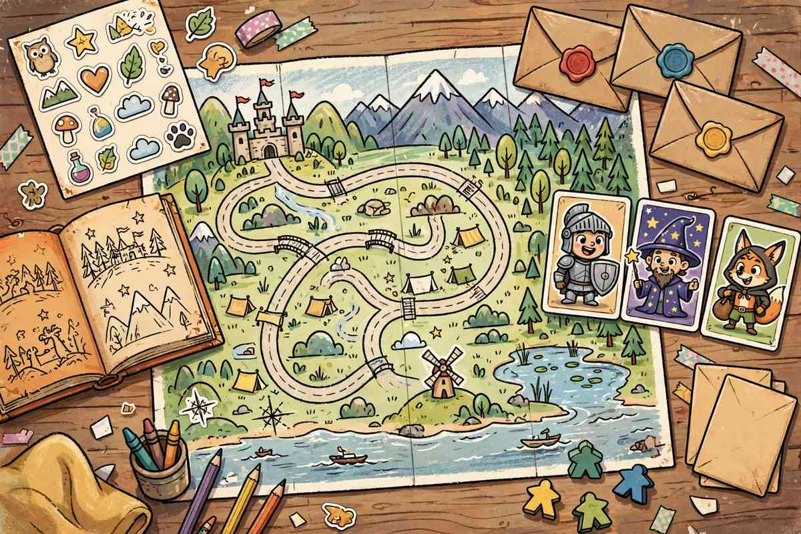

Campaign and legacy games, explained

A campaign game links multiple play sessions into one continuous story, carrying character progress, map changes, or unlocked content from one session to the next. A legacy game is the stricter cousin inside that family. Progress in a legacy game is written onto the game itself, with stickers applied, cards destroyed, and sealed material opened, so the copy on the shelf is changed for good. That one distinction, tracked on paper versus changed in the box, decides price risk, resale, and how angry a group gets when a campaign stalls at session eight.
Two verified anchors frame the whole category. Pandemic Legacy: Season 1, designed by Rob Daviau and Matt Leacock and published by Z-Man Games in 2015, runs 2 to 4 players through 12 to 24 sessions at about 60 minutes each. Gloomhaven, designed by Isaac Childres and published by Cephalofair Games in 2017, runs 1 to 4 players through 95 scenarios at 60 to 120 minutes each, with progress tracked in a reusable way. Same shelf label, very different promises.
The facts box: two formats, one shelf label
Campaign. Sessions connect. Characters, decks, or a map carry forward between sittings, and the story continues from the last result. The box itself stays intact, so a finished campaign can usually be reset and started again with a new group.
Legacy. Sessions connect, and the game records them physically. Stickers go on the board, rules get added or crossed out, cards can be torn up, and sealed boxes or envelopes open only when the story says so. Reference guides describe legacy as a specific type of campaign game for exactly this reason: every legacy game is a campaign, and only some campaigns are legacy.
Standalone story games sit outside both. A single session can still produce a memorable story, but nothing carries forward, so there is no campaign at all. Groups that want story without commitment are shopping in that third pile, and confusing it with the first two is a common buying mistake.
The one test that separates them
Ask where the memory lives. If the memory lives on character sheets, a campaign log, or an app, and the components return to their starting state, the game is a campaign game. Gloomhaven works this way: characters gain perks and new ability cards and eventually retire through a personal quest, while the box can be reset for another group.
If the memory lives in the components, the game is legacy. A stickered city on a Pandemic Legacy map does not peel back into a fresh copy. A destroyed card stays destroyed. That permanence is the appeal, because choices feel weighty, and it is also the cost, because a half finished copy cannot be handed on as a clean game.
The format has a clear starting point. Rob Daviau pioneered the legacy idea with Risk Legacy in 2011, and Pandemic Legacy: Season 1 in 2015 proved the format could carry a full cooperative story across a year of in game months. Knowing that history helps a buyer read newer boxes: legacy on the cover is a claim about physical permanence, not just a claim about story length.
Two spec verified poles: Pandemic Legacy Season 1 and Gloomhaven
Specs verified against reference listings for this guide, November 16, 2026:
| Spec | Pandemic Legacy: Season 1 | Gloomhaven |
|---|---|---|
| Designer / publisher / year | Rob Daviau and Matt Leacock / Z-Man Games / 2015 | Isaac Childres / Cephalofair Games / 2017 |
| Players | 2 to 4 | 1 to 4 |
| Time per session | About 60 minutes | 60 to 120 minutes per scenario |
| Campaign size | 12 to 24 sessions | 95 scenarios |
| Box after finishing | Permanently altered, not resettable as new | Reusable, progress tracked separately |
The table shows why a simple hours comparison misleads. Pandemic Legacy asks for a bounded season with a known shape, 12 months played across 12 to 24 sittings, and then the story ends. Gloomhaven asks for an open ended commitment an order of magnitude larger, with character retirement built in so that even a single seat changes occupants across the campaign. A group choosing between them is not choosing difficulty. It is choosing a season versus a hobby inside the hobby.
Commitment math: sessions times minutes, honestly
Do the multiplication before the purchase, using the verified ranges above. Pandemic Legacy at 12 to 24 sessions and about 60 minutes a session lands at roughly 12 to 24 hours of play, plus teaching and setup. Gloomhaven at 95 scenarios and 60 to 120 minutes a scenario lands at roughly 95 to 190 hours before setup, teardown, and character admin. At one session a week, the first is a season. The second can run past two years with holidays and missed weeks.
Attendance matters more than appetite. A campaign game rewards the same players returning, because character progress and story memory live with the people as much as with the sheets. A rotating group can still enjoy a campaign, but someone has to keep the log, recap the last session, and accept that a missing player means a character is absent or played by someone else. If nobody wants that job, the honest purchase is a shorter campaign or a standalone game.
Short version: buy the campaign the calendar can finish, not the one the trailer promises.
Before anyone buys: a four step group check
This is a pure explainer topic in part, but the buying decision suits a short procedure, so here is the check groups can run in one conversation:
1. Name the format out loud. Say whether the box is reusable campaign or permanent legacy, using the memory test above, so nobody is surprised by stickers or destroyed cards later.
2. Count the real sessions. Use the commitment math for the specific game, then look at the next three months of actual calendars, not hopes.
3. Agree the missing player rule. Decide now what happens when someone cannot come: play on, pause, or let another player run the character. Write the choice down with the campaign log.
4. Agree the stall rule. Decide what happens if the group stops halfway, especially for a legacy box that will stay permanently altered.
Success check: every player can state the format, the rough total hours, and both agreed rules without looking them up. If anyone cannot, the conversation has not finished yet, and neither has the buying decision.
Who should skip both formats for now
Skip campaign and legacy games if the group meets irregularly, if players rotate heavily, or if the buyer wants a game that teaches in five minutes and ends cleanly each night. Those are not flaws in a group. They are signals to buy standalone games and enjoy complete stories in single sittings.
Choose a reusable campaign first if the group likes long arcs but wants an exit. Choose legacy when the group wants the strongest sense that choices cannot be taken back, and everyone has accepted the stall rule in advance. Readers weighing game weight as well as length can pair this guide with what complexity ratings mean before committing a season of evenings.
— Rex Bennett, Entertainment Writer